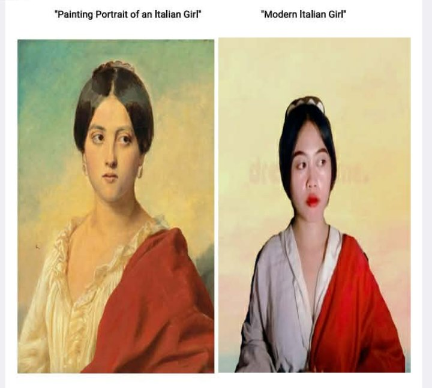
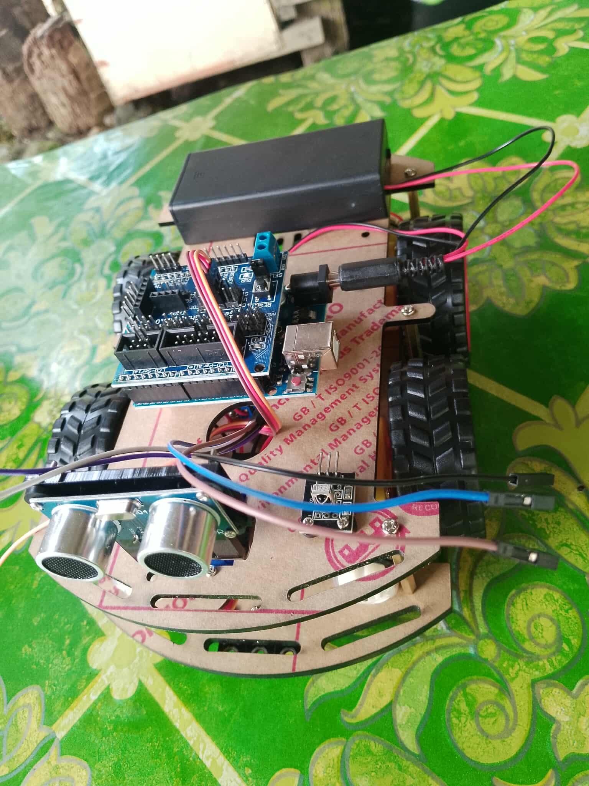
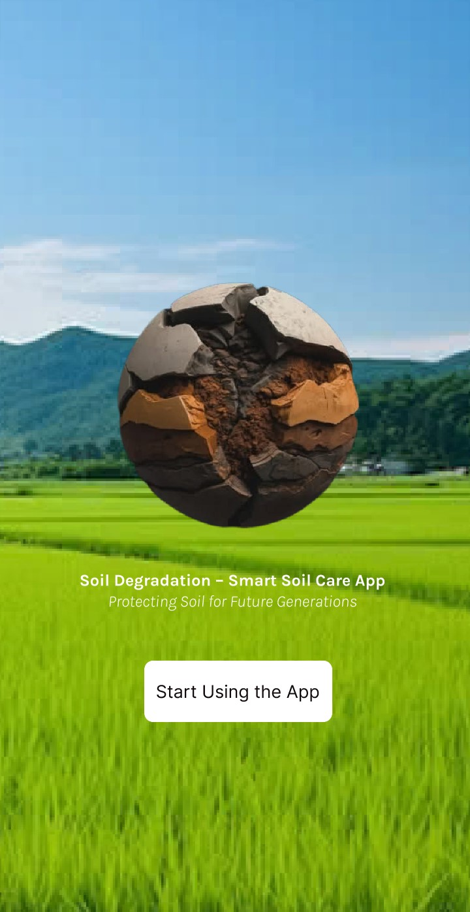
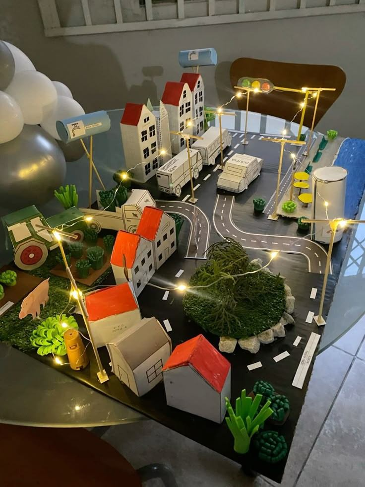

OBRA MAESTRA
“Obra maestra” is a Spanish term meaning “masterpiece.” It refers to an outstanding work of art, literature, music, or craftsmanship that demonstrates exceptional skill, creativity, and excellence..
“Obra maestra” is a Spanish term meaning “masterpiece.” It refers to an outstanding work of art, literature, music, or craftsmanship that demonstrates exceptional skill, creativity, and excellence..

A recreational portrait is a casual and expressive photograph or artwork created for enjoyment rather than formal or professional purposes. It captures personality, mood, and natural moments in a relaxed and creative style..

A smart robot car is an intelligent, programmable vehicle equipped with sensors, cameras, and microcontrollers that allow it to navigate, detect obstacles, and follow commands autonomously or via remote control. It is commonly used in robotics education, automation research, and hobby projects..

Soil Degradation App helps Filipino farmers monitor and restore soil health with easy-to-use tools, smart fertilizer guidance, and region-specific farming tips. It empowers sustainable farming, boosts crop productivity, and protects the land for future generations...

This image shows a sustianable city diorama made from cardboard and craft materials. It features small houses with red roofs, roads with lane markings, trucks, streetlights with glowing fairy lights, trees, and farm elements like a tractor and animals. The detailed layout and lighting give the model a realistic and charming small-town atmosphere...